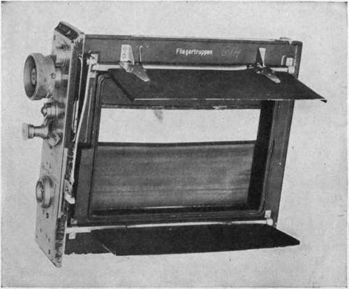
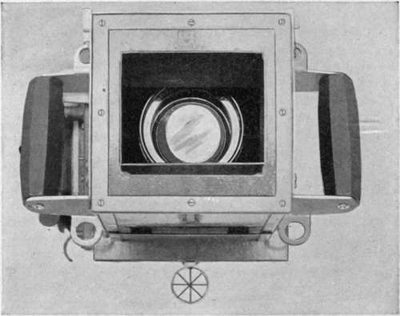
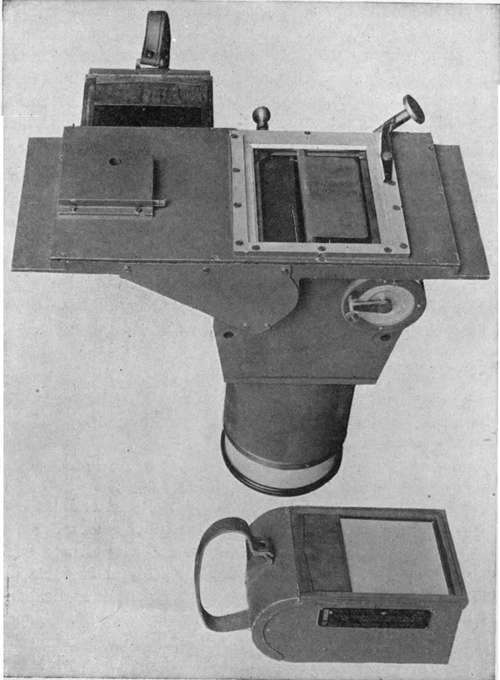
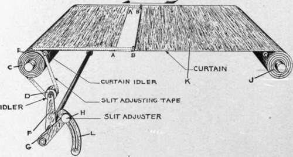
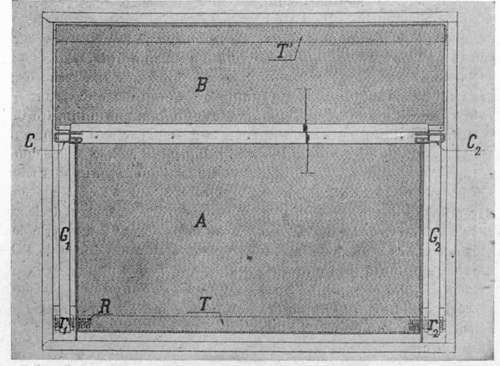
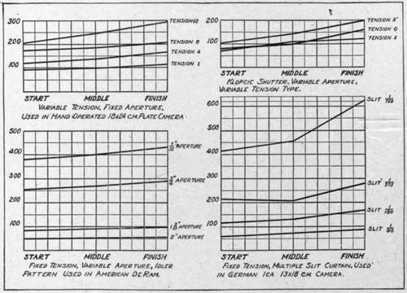

Representative Shutters
Description
This section is from the book "Airplane Photography", by Herbert E. Ives. Also available from Amazon: Airplane photography.
Representative Shutters
The Folmer variable tension shutter is used on the United States Air Service hand-held and hand-operated plate camera and on some of the film cameras. It consists of a fixed aperture curtain wound on a curtain roller in which the spring can be set to various tensions, numbered 1 to 10. The range of speeds attainable is at best about three to one, or from yxTo to 3-^0 second, considerably shorter than the range indicated as desirable. Its uniformity of travel is variable with the tension, as shown by representative performance curves in Fig. 30. Lacking any self-capping feature the shutter is provided either with an auxiliary curtain, or in the hand-held camera with flaps in front of the lens, opened by the exposing lever before the curtain is released (Fig. 39). This shutter is made a retension, the openings roughly in the ratio 1, ^, \, •§-, which when the spring tension is properly adjusted give exposures of 1/90, 1/180, 1/375, 1/750 second. To pass from one exposure time to another the setting milled head is wound up to successively higher steps or else exposed one or more times without resetting, depending on the direction it is desired to go. Capping during setting, or during exposure, in order movable unit in the 18X24 centimeter hand-operated camera, but is built into the hand-held and film cameras.
Fig. 26. - Removable four-slit shutter of German (lea) camera, showing flaps.
Fig. 39. - Front view of U. S. aerial hand camera, showing lens flaps partly open, and details of tube sight.
The lea shutter used on the standard German aerial cameras is a good example of the multiple slit curtain (Fig. 26). Four fixed aperture slits are provided, with a single to change the opening, is provided for by a pair of flaps on the shutter unit, which open into the camera body. The mechanical work on these shutters is of excellent quality, the curtain running with exceptional smoothness. Provision is made for adjusting the tension until the marked speeds are attained; this is presumably done in a repair laboratory to which the shutter only need be sent, as it is a removable unit. Tests made on one of these shutters wound to its highest tension are shown in Fig. 30. The marked speeds are not attained, and there is considerable lack of uniformity from start to finish of the travel.
L Camera Variable-Aperture Shutter
The shutter of the L type camera (Fig. 27) is representative of one of the most primitive methods of varying aperture. The two jaws of the slit are held together by a long cord passing completely around the aperture, fastened permanently at one end and attached at its other end by a sliding clasp or saddle. As this saddle is forced in one direction the slit is closed, in the opposite direction the cord becomes slack, and after the shutter is released once or twice the slit assumes a wider opening. A chronic trouble is the breaking of the cords. Its opening can be changed only after the plate magazine is removed.
U. S. Air Service Variable-Aperture Shutter
This shutter is incorporated in the American deRam and in other late American cameras (Fig. 28). Its characteristic feature is the introduction of an idler, whose distance from the main curtain roller can be varied. Tapes whereby the following curtain is attached to the spring roller pass over this idler, and by changing its position the aperture or distance between the two curtain elements is altered over a large range. Tests of this shutter are shown in Fig. 30. A speed of second is provided for by a slit width of five centimeters, and the highest speed is fixed only by the practical limit of approach of the jaws. Experiment shows great uniformity of rate of travel to be attainable by combining careful choice of spring length and tension with good workmanship in the mechanical features. Variable-aperture fixed-tension shutters have a definite advantage over the variable-tension type in that they can utilize for all speeds that tension which gives uniform action. The capping feature of this shutter is provided in the American deRam by flaps, in the automatic film camera by an auxiliary curtain. The shutter is removable in the deRam, but built into the other camera.
Fig. 27. - type camera showing open negative magazines and shutter mechanism.
Fig. 28. - Variable aperture curtain developed in U. S. Air Service, and used in American deRam, and "K" type automatic film cameras.
The Klopcic Variable-Tension, Variable-Aperture, Self-Capping Shutter
The Klopcic Variable-Tension, Variable-Aperture, Self-Capping Shutter is an example of an attempt to meet all shutter requirements with an entirely self-contained mechanism. It is shown diagrammatically in Fig. 29. Tapes Gl9 G2 are used to connect the following curtain B directly to the spring roller T, at a fixed distance, while the leading curtain, A, may be slid along the tapes by small friction buckles, C19 C2, auxiliary springs R1, R2 serving to keep it taut in any position. When the shutter is being set the buckles are arrested against stops while the winding-up continues for what is to be the following half of the curtain in exposing. When released the curtain moves across with an aperture fixed by the point of setting of the buckle stops. At the end of the travel the buckles are arrested by other stops, while the following portion of the curtain continues its travel to the end. On re-winding, therefore, the aperture is closed. Variable tension as well as variable aperture is provided, although little used. In the French cameras a lens flap is also inserted behind the lens, but this is not needed if the self-capping feature functions properly. On the hand cameras this flap is said to be necessary in order to prevent a curious kind of accident: if the camera is held on the knee, pointing upward, an image of the sun may be formed on the curtain and burn a hole through it.
Fig. 29. - Mechanism of Klopcic variable aperture self-capping shutter.
The performance of the French shutter in respect to uniformity has already been shown in Fig. 24. It leaves very much to be desired. Besides non-uniformity of action during its travel it exhibits another common defect of variable-tension shutters, namely, the curtain must be released several times after a change of tension before the new speed is established (Fig. 30, tensions 5 and 5').
Fig. 30. - Performances of various shutters used on aerial cameras. Speeds expressed in reciprocals of fractional parts of one second.
The French Shutter
The French Shutter as made for the de Maria cameras is a removable unit. The small size (13X18 cm.) sets by the straight pull of a projecting pin, the larger (18 X24 cm.) by winding up a milled head. The former is the more convenient motion for an aerial camera. Care must be taken with either type that the motion of setting is not stopped when the first resistance is encountered; this occurs when the tape buckles strike their stop and the slit begins to open.
Continue to:
Tags
camera, lens, airplane, aerial, film, exposure, photography, maps, birdseye